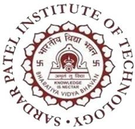
From Learning Technology to Creating Impact
Engineering education is undergoing a fundamental transformation. The engineer of today is expected to do much more than master technical concepts. Along with strong domain knowledge, students need the ability to think critically, communicate effectively, work across disciplines, understand emerging technologies, and contribute responsibly to society and industry.
Recognising this changing landscape, Sardar Patel Institute of Technology has introduced its Liberal "Pi-Model" of Engineering Education under the NEP 2020 curriculum framework. The curriculum is designed not merely to produce technically competent engineers, but to nurture well-rounded professionals with interdisciplinary awareness, ethical grounding, and the skills to adapt to a rapidly changing world.
The curriculum follows a Choice Based Credit System (CBCS) in which students shape their academic journey according to their interests. Programme-related courses account for 55% of the curriculum, while substantial credit space is allocated to multidisciplinary and experiential components. This flexibility allows students to gradually develop an academic profile aligned with their individual aspirations.
The initial semesters build strong foundations in Engineering Calculus, Linear Algebra, Probability, Digital Systems, Programming, and Data Structures. By the third and fourth semesters, students encounter core subjects — Discrete Structures, Database Management, Computer Organisation, Operating Systems, Software Engineering, and Design & Analysis of Algorithms. The fifth semester takes students into Artificial Intelligence & Machine Learning, Cryptography & Network Security, Theory of Computation, and Distributed Computing.
Modern technological problems rarely belong to a single discipline. The curriculum provides significant multidisciplinary components through Open Electives and Multidisciplinary Minor (MDM) tracks, enabling students to explore:
The curriculum places strong emphasis on experiential learning with a structured progression:
Learn → Explore → Build → Experiment → Solve → Create
Students undertake Mini Project I in Semester V, Mini Project II in Semester VI, followed by a Main Project, and depending on the selected pathway, research or industry internships. The curriculum introduces project-based learning much earlier than the final year, encouraging students to identify problems, experiment with solutions, and develop working systems.
For students with strong research inclinations, the curriculum provides a dedicated Honours by Research pathway. Students earning 18 additional credits through prescribed research stages, with a CGPA of 8.25 or above, may pursue the Honours by Research degree — creating sustained research experience at the undergraduate level.
Aligned with NEP 2020, the curriculum provides exit pathways after one, two, and three years, leading respectively to a Certificate in Engineering, Diploma in Engineering, and Bachelor of Science degree, subject to prescribed credit and requirements. This ensures that every student's learning is formally recognised regardless of the duration of study.
The Department of Computer Engineering maintains state-of-the-art laboratory infrastructure across the fourth, fifth, and sixth floors of the institute, ensuring that students have access to modern computing resources for all academic and project-related needs.
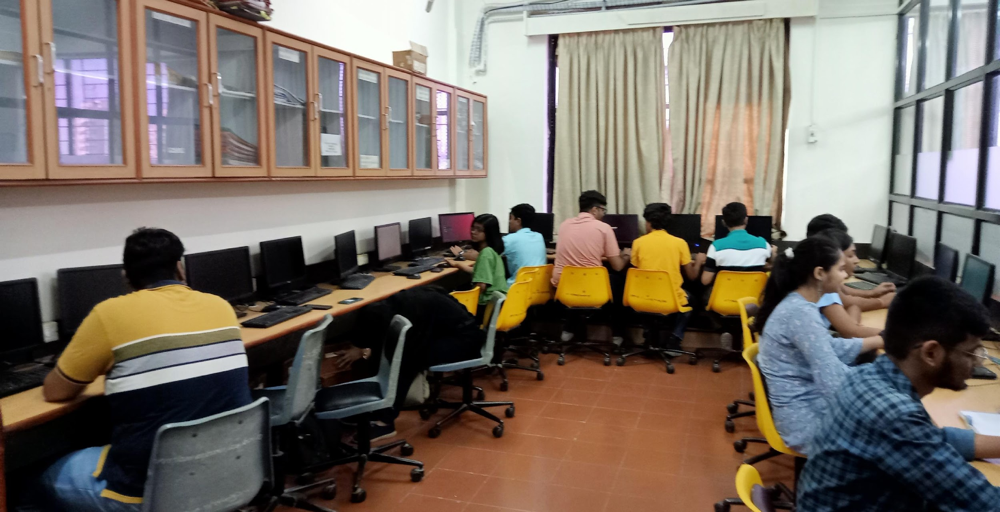
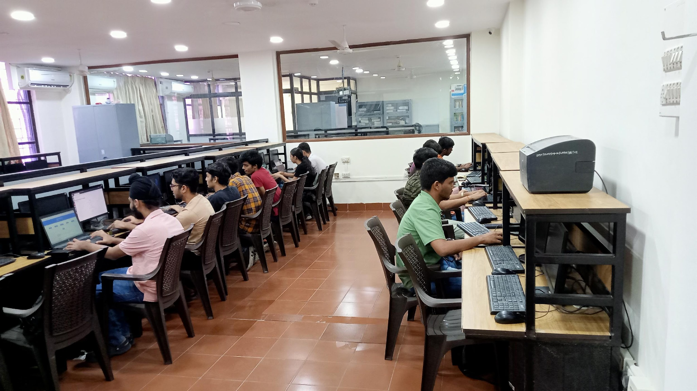
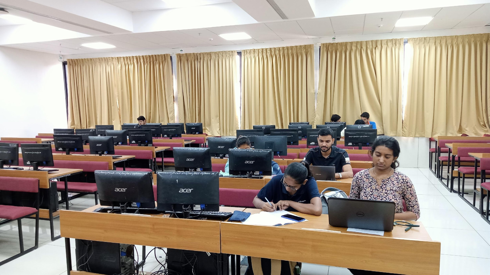
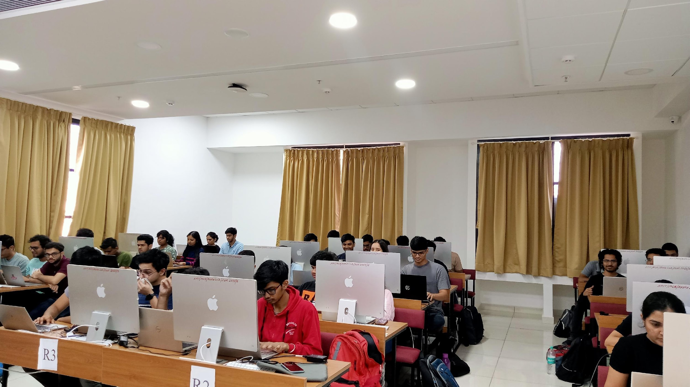
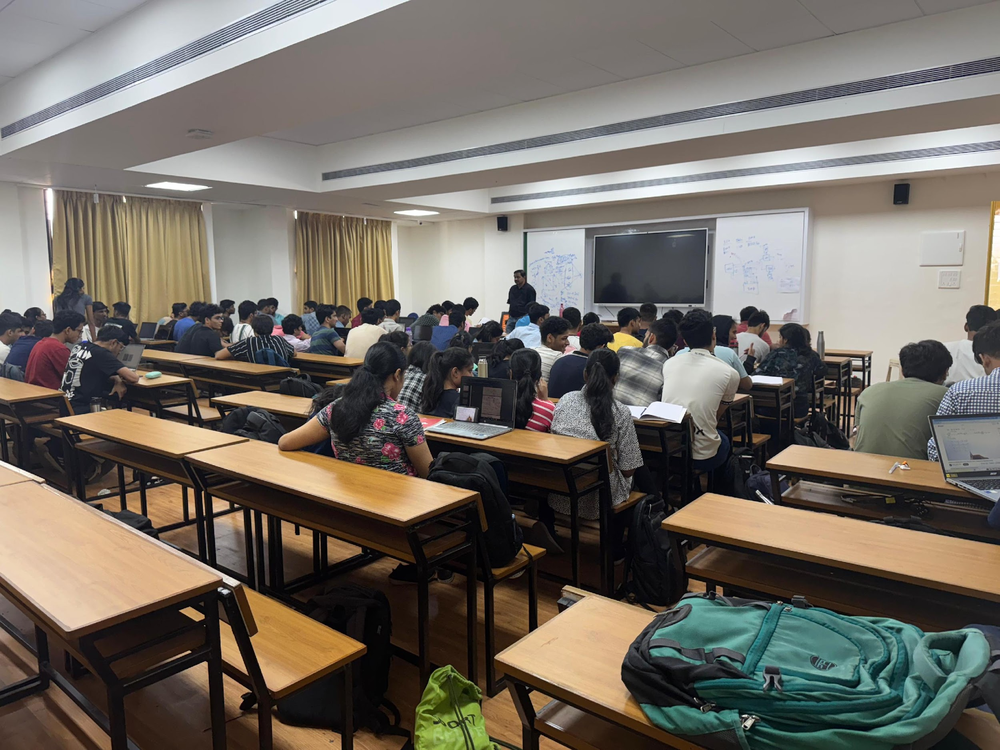
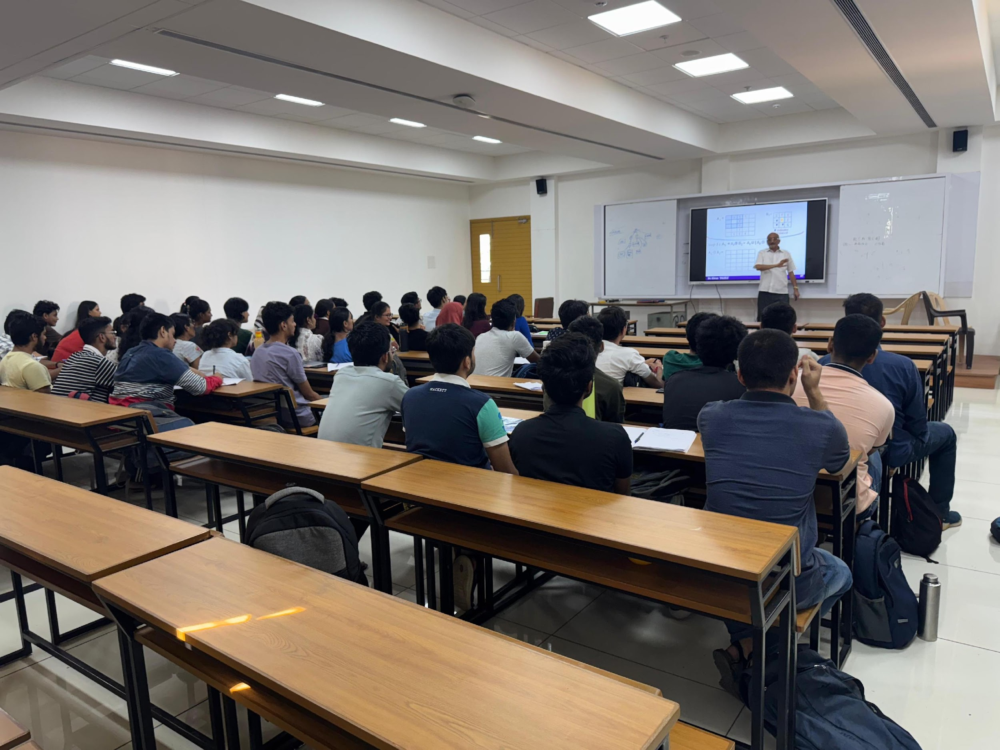
40 New HP Desktop Computers installed in Database Lab (Lab-5) & Data Analytics Lab (Lab-6):
All laboratories are ICT-enabled with high-speed internet connectivity, projectors, and air-conditioning. The 24×7 resource access policy ensures students can utilise labs beyond regular hours with requisite permissions.
| Category | Companies |
|---|---|
| Elite | 21 |
| Super Dream | 70 |
| Dream | 10 |
| Normal | 9 |
| Metric | Value |
|---|---|
| Total Students | 155 |
| Opted for Placements | 118 |
| Placed | 110 |
| Highest CTC | ₹33.00 LPA |
| Lowest CTC | ₹3.60 LPA |
| Average CTC | ₹10.60 LPA |
| Median CTC | ₹9.00 LPA |
| Company | Offers |
|---|---|
| Barclays | 21 |
| Nomura | 6 |
| BlackRock | 5 |
| IKS Health | 5 |
| ICICI Lombard | 5 |
| General Mills | 4 |
| Baker Hughes | 4 |
| We Matter | 4 |
| PhonePe | 3 |
| JP Morgan & Chase | 3 |
| HSBC | 3 |
| Loginext | 3 |
A significant number of graduating students have secured admissions to India's premier research institutions and management schools, demonstrating the department's strong academic foundation.
| Institution | No. of Students |
|---|---|
| Indian Institute of Technology, Bombay | 24 |
| Indian Institute of Technology, Patna | 4 |
| Indian Institute of Technology, Madras | 2 |
| Indian Institute of Technology, Guwahati | 2 |
| S.P. Jain Institute of Management & Research (SPJIMR) | 2 |
| Defence Research and Development Organisation (DRDO) | 1 |
Every student in the department completes a mandatory industry or research internship, gaining practical exposure to professional engineering environments. Students have interned at leading organisations across finance, technology, consulting, and research sectors.
Students have interned across 50+ organisations including research internships under faculty guidance at S.P.I.T., IIT Bombay, and other premier institutions.
The Department of Computer Engineering is supported by a distinguished team of 30 faculty members — 12 holding doctoral degrees, 6 pursuing Ph.D. — and 6 dedicated technical and supporting staff members.
Faculty members shoulder significant administrative and institutional responsibilities beyond their academic duties, contributing to the holistic functioning of the department and the institute.
| Faculty Member | Responsibility |
|---|---|
| Dr. Sudhir N. Dhage | Head of Department, Chairman BoS (Computer Engineering) |
| Dr. Prasenjit Bhavathankar | NAAC Coordinator, NBA Documentation |
| Dr. Surekha Dholay | Technical Program Committee Reviewer, Department Research Coordinator |
| Dr. Anant V. Nimkar | NBA Accreditation Coordinator |
| Dr. Kailas Devadkar | Patent & IPR Cell Coordinator |
| Dr. Pramod Bide | Best Innovative Teaching Award Recipient — L&T Edutech |
| Prof. Anand Godbole | NPTEL Coordinator, Course Coordinator (DSGT) |
| Prof. Reeta Koshy | DAPC Member, Result Analysis Coordinator |
| Prof. Sunil Ghane | Project Coordinator (BE), IQAC Committee Member |
| Prof. Swapnali Kurhade | Placement Coordinator (CE), Slow-Fast Learner Coordinator |
| Prof. Jyoti Ramteke | Co-Teaching Coordinator, Industry Interaction |
| Prof. Govind Gaundalkar | Examination Cell Coordinator (CE), LMS Moodle Admin |
| Prof. Yogita Patil | Liberal Learning Course Coordinator |
| Prof. Abhijeet Salunke | Lab Coordinator, Assessment Tools |
The Department maintains an active Advisory Board comprising eminent academicians from premier institutions and industry leaders. The Board of Studies (BoS) meets regularly to review and update curriculum, ensuring alignment with industry needs and emerging technologies. The Departmental Academic Performance Committee (DAPC) monitors academic progress, analyses results, and implements corrective measures.
Key Governance Bodies:
Inventors: Dr. Kailas Devadkar, Satyam Jaiswal, Siddhant Rao, Dr. Jignesh Sisodia, Komal Tarachandani
Application No: 20 2025 104 311
Filed: 25 July 2025 | Published: 20 August 2025
| Sr. | Faculty | Citations (Total) | Citations (2026) |
|---|---|---|---|
| 1 | Dr. Sudhir N. Dhage | 309 | 111 |
| 2 | Dr. Kailas K. Devadkar | 118 | 37 |
| 3 | Dr. Anant V. Nimkar | 92 | 22 |
| 4 | Mr. Sunil B. Ghane | 89 | 24 |
| 5 | Dr. Pramod J. Bide | 85 | 11 |
| 6 | Dr. Nataasha N. Raul | 64 | 14 |
| 7 | Dr. Surekha Dholay | 62 | 10 |
| 8 | Dr. Prasenjit Bhavathankar | 45 | 10 |
| 9 | Mrs. Reeta Koshy | 40 | 9 |
| 10 | Prof. Anand Godbole | 39 | 12 |
| 11 | Dr. Jignesh Sisodia | 28 | 11 |
| 12 | Mrs. Jyoti Ramteke | 28 | 7 |
| 13 | Dr. Disha Sail | 28 | 1 |
| 14 | Mrs. Swapnali Kurhade | 27 | 6 |
| 15 | Prof. Abhijeet Salunke | 21 | 7 |
| Sr. | Title | Author(s) | Journal | Indexed |
|---|---|---|---|---|
| 1 | Emoji-Free Sarcasm Detection in Code-Mixed Text via Emotion-Polarity Divergence | Falak Malik, Dr. Sudhir Dhage, Dr. Pramod Bide | IEEE Trans. on Affective Computing | Scopus |
| 2 | Physics-based Forgery Detection using RBF-SVM with Multi-feature Fusion | Dr. Anant V. Nimkar | Signal, Image and Video Processing (Springer) | SCIE |
| 3 | Hybrid MoE and VLM Framework for Scalable Plant Disease Detection | Dr. Disha Sail | AGH Computer Science | SCIE |
| 4 | Multimodal Assistant for the Visually Impaired | Mrs. Reeta Koshy | Int'l Journal of Technology (NTU) | SCIE |
| 5 | Data-Driven Agro-Climatic Zoning of India | Dr. Kailas Devadkar | Journal of Technology | Scopus |
| 6 | Multimodal Anomaly Detection for Police Complaints | Dr. K. Devadkar, Dr. J. Sisodia | Journal of Technology | Scopus |
| 7 | AI-Driven Renewable Energy Solutions for Climate Change | Dr. Nataasha Raul | Journal of Technology | Scopus |
| Sr. | Title | Author(s) | Conference |
|---|---|---|---|
| 1 | Physics-Based AR Framework for Home Furnishing Visualization | Dr. Anant Nimkar | IEEE IATMSI 2026, Gwalior |
| 2 | Bridging ML and GenAI for Intelligent Vulnerability Detection | Dr. Anant Nimkar | IEEE IATMSI 2026 |
| 3 | Cryptographic API Misuse Detection Using BERT | Dr. Anant Nimkar | IEEE ICITIIT 2026 |
| 4 | CyberVigilance: Deep Learning for Cyber Attack Forecasting | Swapnali Kurhade | IEEE INDISCON 2025, NIT Rourkela |
| 5 | LexChain: Blockchain Solution for Electronic Evidence | Dr. P. Bhavathankar | IEEE ISDFS 2025, Boston |
| 6 | Graph Neural Approaches to Credit Scoring | Dr. J. Sisodia, Dr. K. Devadkar | IEEE APCIT 2025, Mysore |
| 7 | Beyond Hate Speech: Synthetic Dataset for Cyberbullying Detection | Sunil Ghane | IEEE PuneCon 2025 |
| 8 | KubeTranscode: Distributed FFmpeg-based DASH Transcoding | Dr. Pramod Bide | IEEE GIEST 2025 |
| 9 | Flood Risk Prediction using ML Techniques | Falak Malik | IEEE INDISCON 2025 |
| 10 | Tutor-Aware Automated Essay Scoring with Knowledge Graph | Dr. Kailas Devadkar | IEEE ICMI 2026 |
Showing 10 of 25 conference publications. Full list includes papers at IEEE CVMI, ICDSINC, ICAUC, CONIT, ICERECT, IC3, ICCPCT, GCON, GITCON, ICONAT and more.
| Faculty | Achievement |
|---|---|
| Prof. Anand Godbole | NPTEL Discipline Star Award |
| Dr. Pramod Bide | Best Innovative Teaching Award — L&T Edutech |
| Dr. Jignesh Sisodia | Best Software Project Award — Cantilever |
| Prof. Govind Gaundalkar | Best Question Paper Award — Digital Systems |
| Dr. J. Sisodia, Prof. A. Salunke | Best Question Paper Award — Computer Communication & Networks |
| Dr. Surekha Dholay | Reviewer, Technical Program Committee |
| Faculty | Course | Certification |
|---|---|---|
| Prof. Anand Godbole | Joy of Computing using Python | Elite |
| Prof. Anand Godbole | Theory of Computation | Elite |
| Dr. Jignesh Sisodia | Computer Architecture | Elite |
| Prof. Reeta Koshy | Software Engineering | Elite |
| Prof. Swapnali Kurhade | AI in Industrial & Management Engineering | Elite |
| Prof. Sunil Ghane | Theory of Computation | Certified |
| Year | Event | Student(s) | Organisation |
|---|---|---|---|
| FE | Shri Ram Investment Competition — 1st | Nivaan Shah | D-Street, SRCC |
| SE | Equinox 26, KKWIEER — 1st | Nitin Gaikwad | K.K. Wagh Institute |
| SE | Spectrum Hackathon | Vidhi Shah, Heli Shah, Dhyani Sanghvi, Mahi Savla | SBMP & College of Engg |
| SE | Recursion 7.0 — 2nd Runner Up | Amit Gandhi, Stavan Desai, Piyush Fatnani | RGIT |
| TE | Nexos AI Code Kong — 2nd Place | Daksh Jain | Nexos AI |
| TE | Vishleshan Runner-up IIM Raipur | Aniruddh Iyer | IIM Raipur |
| TE | Odoo × SPIT Hackathon | Aayush Shah | Odoo |
| SE | Stratopia VJTI / Stratos | Devraj Sundrani | E-Cell VJTI / SPCG E-Cell |
The final-year B.Tech projects span diverse domains including Machine Learning, Deep Learning, Artificial Intelligence, Blockchain, Cloud Computing, and Cybersecurity. Each project is guided by a faculty mentor and evaluated by external examiners from academia and industry.
| Gr. | Project Title | Students | Guide | Domain |
|---|---|---|---|---|
| 1 | AI-driven Automated Financial Portfolio Management | Atharva Bambere, Darshan Bardeo, Arjavi Kakulte | Dr. B.N. Chaudhari | ML |
| 2 | AI-Driven Financial Health Evaluation & Wealth Advisory | Maureen Miranda, Sara Nainwar, Ayushi Japsare | Dr. Sudhir Dhage | ML |
| 3 | Deep & Hybrid Models for Alzheimer's Detection using MRI | Shardul Mahindrakar, Krrish Nichanii, Piyush Mehta | Dr. Sudhir Dhage | DL |
| 4 | AI-Powered Learning Platform | Kanishka Amritkar, Lokesh Chaudhari | Dr. Sudhir Dhage | AI |
| 5 | Dynamic Route Optimization in Real Time Navigation | Sneha Sambare, Suhani Garate, Sanika Sule | Dr. Surekha Dholay | ML |
| 6 | Robust Deepfake Detection using XceptionNet & DCT Features | Shrinivas Waney, Atharva Sankhe | Dr. Surekha Dholay | DL |
| 7 | FundChain: Blockchain-Driven Fundraising using Solidity | Manish Jadhav, Mayur Solankar, Vishesh Savani | Dr. P. Bhavathankar | Blockchain |
| 8 | BharatNFT: Secure Marketplace for Digital Assets | Shesh Shrikant, Ronit Chintrate, Varsha Bojja | Dr. P. Bhavathankar | Blockchain |
| 9 | Mindease: Stress Detection & Relaxation System | Harsh Shah, Tej Shah, Veer Shah | Prof. Anand Godbole | AI |
| 10 | Injury Detection for Football Players using Deep Learning | Daksh Jain, Bhaskar Kapase, Shreyas Naik | Prof. Anand Godbole | DL |
| 11 | AI-Powered Recruitment & Career Growth Platform | Aayush Dubey, Anushka Jadhav, Manan Kher | Prof. Anand Godbole | AI |
Showing select projects. Total: 35+ project groups across the department.
The M.Tech programme in Computer Engineering provides students with advanced research opportunities. The following dissertations represent cutting-edge work in AI, NLP, security, sustainability, and interdisciplinary computing.
| Sr. | Student | Dissertation Title | Mentor |
|---|---|---|---|
| 1 | Ameya Nile | ML-Based Food Waste Reduction & Smart Restaurant Management | Dr. Sudhir Dhage |
| 2 | Tushar Barkur | Explainable Cross-Domain User Preference Modeling | Dr. Jignesh Sisodia |
| 3 | Vaishnavi Dalvi | ClaimSage: Agentic RAG Framework for Insurance Claims | Prof. Reeta Koshy |
| 4 | Vedang Deshpande | Reinforcement Learning for Energy Optimization in Smart Grids | Dr. Aarti Karande |
| 5 | Suyog Dhande | Explainable AI for Legal Case Prioritization using BERT | Dr. D.R. Kalbande |
| 6 | Om Jadhao | Image QA for Ethical Education: Semantic & Moral Evaluation | Prof. Jyoti Ramteke |
| 7 | Gauri Korgaonkar | Emotion-Aware Zero Trust Access Control | Dr. Renuka Pawar |
| 8 | Sudarshan Lagade | Water Demand Prediction in India | Prof. Abhijit Salunke |
| 9 | Durgesh Mahant | Smart Navigation with Real-Time Hazard Detection & Dynamic Routing | Dr. Nataasha Raul |
| 10 | Kiran Maharana | Spatiotemporal GNNs for Water Contamination Forecasting | Dr. P.B. Bhavathankar |
| 11 | Falak Malik | Emoji-Free Sarcasm Detection in Code-Mixed Text | Dr. Pramod Bide |
| 12 | Amey Morye | Yoga Mitra: Intelligent Multilingual Framework for Yoga Assistance | Dr. Sujata Kulkarni |
| 13 | Devang Parab | AI-Powered Mental Health Prediction with Psychiatric Assistance | Dr. K.K. Devadkar |
| 14 | Fazil Shaikh | Decomposing Recall & Reasoning Failures in Small Language Models | Prof. Sheetal Choudhary |
| 15 | Kshitija Sole | AgriXplain: Explainable Region-Aware Ensemble for Crop Yield Forecasting | Prof. Sunil Ghane |
The Department of Computer Engineering actively engages with industry and research organisations through MOUs, co-teaching arrangements, expert lectures, workshops, and collaborative programmes. These interactions ensure that the curriculum remains industry-relevant and students gain exposure to real-world practices.
Arranged by Prof. Swapnali Kurhade, this co-teaching session brought expertise from IIT Patna directly to S.P.I.T. students, bridging the gap between institutional and national-level pedagogy in the AI/ML domain.
Faculty members regularly attend and organise Short-Term Training Programmes (STTPs), Faculty Development Programmes (FDPs), and workshops to stay updated with the latest technological advancements. Topics include Deep Learning, Quantum Computing, Cybersecurity, Blockchain, and Pedagogical Innovation.
Department faculty serve as invited speakers, resource persons, and session chairs at national and international conferences, contributing to knowledge dissemination beyond the institution.
The Department of Computer Engineering takes immense pride in its alumni who have established themselves as leaders across technology, finance, entrepreneurship, and research. Our alumni network actively contributes to the department through mentoring, guest lectures, co-teaching, and recruitment.
The department runs an active Alumni Mentoring Programme where alumni from leading organisations mentor current students on career development, technical skills, industry readiness, and higher education guidance. This structured programme creates a bridge between academic learning and professional practice.
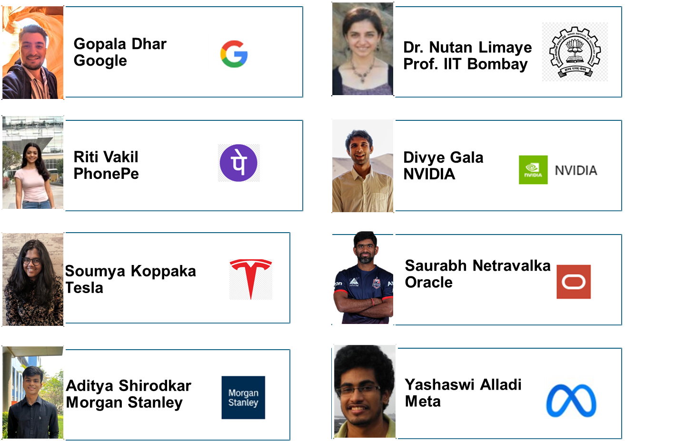
Several alumni have embarked on entrepreneurial ventures, founding startups and technology companies that create impact across various sectors. The department actively supports entrepreneurial aspirations through its curriculum, which includes courses on Innovation and Entrepreneurship, and through the institute's E-Cell and incubation support.
CodeHousie offered an innovative format by integrating coding challenges with the traditional Housie game, creating an intellectually stimulating yet engaging competitive environment. Held in the computer laboratories on the fourth floor, the event challenged students to solve algorithmic problems while competing for prizes in a game-show atmosphere.
Pixel Perfect was a frontend-focused hackathon aimed at enhancing practical UI/UX and frontend development skills. Conducted at S.P.I.T., the event challenged undergraduate engineering students to build pixel-perfect, responsive web interfaces under time constraints.
The flagship event of the department, SPIT Hackathon's 10th edition was a national-level 24-hour hackathon that brought together the brightest student innovators from across the country. After a rigorous shortlisting process, 78 teams competed in the final round.
A competitive technical quiz event testing knowledge across computer science domains — from data structures to operating systems to emerging technologies.
A structured programme encouraging students to identify research problems, formulate hypotheses, and present research proposals to a panel of faculty and industry experts.
An introductory conclave on Quantum Computing — covering quantum gates, qubits, quantum algorithms, and the future of quantum ML — a domain represented in the department's elective basket.
The third edition of AIRAVAT — a hands-on workshop and competition focused on AI and Machine Learning, providing students with practical experience in building and deploying ML models.
FACE organised Codefolio, a competitive programming and portfolio-building event designed to help students strengthen their coding profiles and develop well-rounded technical portfolios for placement preparation and competitive programming contests.
In alignment with the holistic education philosophy, the department offers activity-based Liberal Learning Courses that go beyond traditional engineering education:
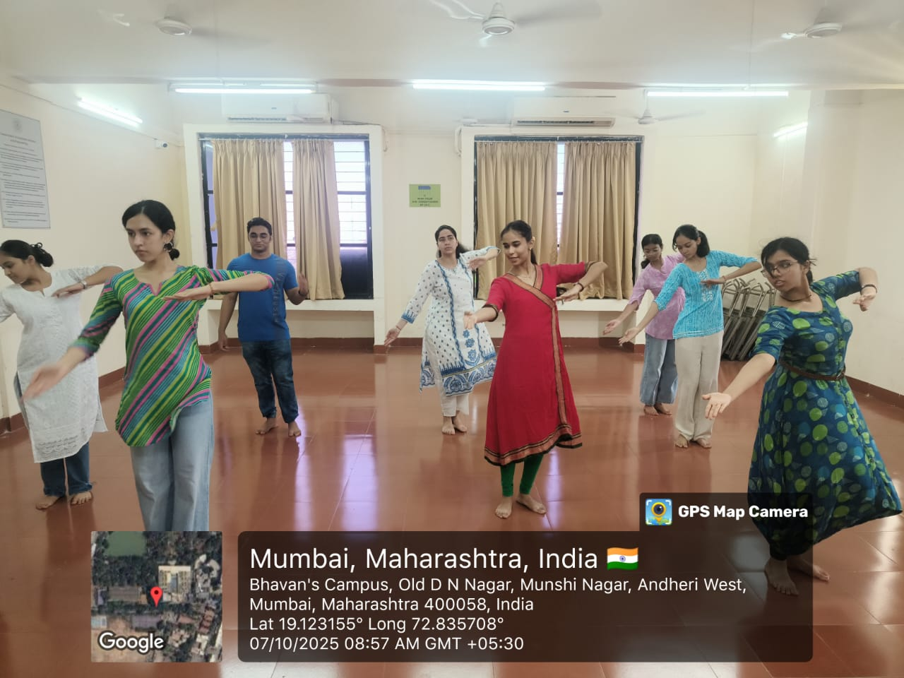
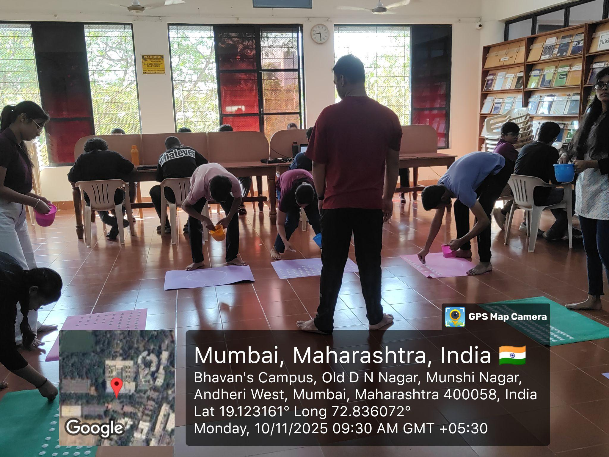
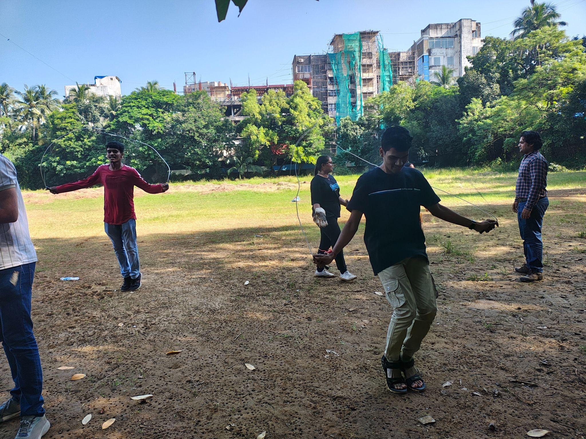
The department implements a structured support programme to identify and assist both slow and fast learners, ensuring that every student receives appropriate academic attention.
Faculty members employ creative and evidence-based pedagogical approaches to enhance student engagement and deepen conceptual understanding.
| Faculty | Innovation | Subject | Class |
|---|---|---|---|
| Prof. Jyoti Ramteke | Interactive Fun Quiz on AI Concepts using Mentimeter | AISC | TE Comp C & D |
| Prof. Reeta Koshy | Flipped Classroom — Group Discussion of research papers and concept presentation | DevOps | TE Comp AB |
| Prof. Swapnali Kurhade | Mentimeter Quiz, Think-Pair-Share, Open Book Tests | AIIA | Final Year |
| Prof. Abhijeet Salunke | Card Trick illustrating mathematical concepts in cryptography | CNS | TE Comp |
| Prof. Anand Godbole | The 5-Card Trick for discrete structures | DSGT | SE |
| Dr. Pramod Bide | QR Code scanning via Android mobile devices for HPC | HPC | BE |
The department leverages alumni expertise through co-teaching sessions. Notable collaborations include co-teaching for AIML delivered by Dr. Maheshkumar H. Kolekar from IIT Patna, arranged by Prof. Swapnali Kurhade, bridging institutional and national-level pedagogy.
The following SWOC analysis provides a candid assessment of the department's current position and future trajectory.
This magazine has been conceptualised, curated, and crafted by the editorial team of the Department of Computer Engineering, S.P.I.T., Mumbai.
Faculty Advisor
Dr. Sudhir N. Dhage
Professor & Head of Department
Coordinating Faculty
Department Faculty Committee
Computer Engineering, S.P.I.T.
Bharatiya Vidya Bhavan's
Sardar Patel Institute of Technology
Munshi Nagar, Andheri (West), Mumbai — 400 058
Empowered Autonomous Institute Affiliated to University of Mumbai
https://comp.spit.ac.in/
© 2026 Department of Computer Engineering, S.P.I.T. All rights reserved.
Annual Magazine, Academic Year 2025–26